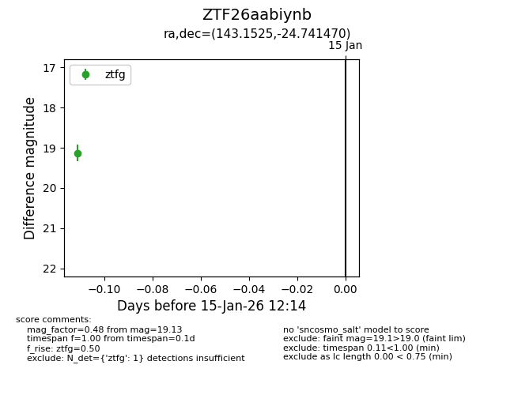
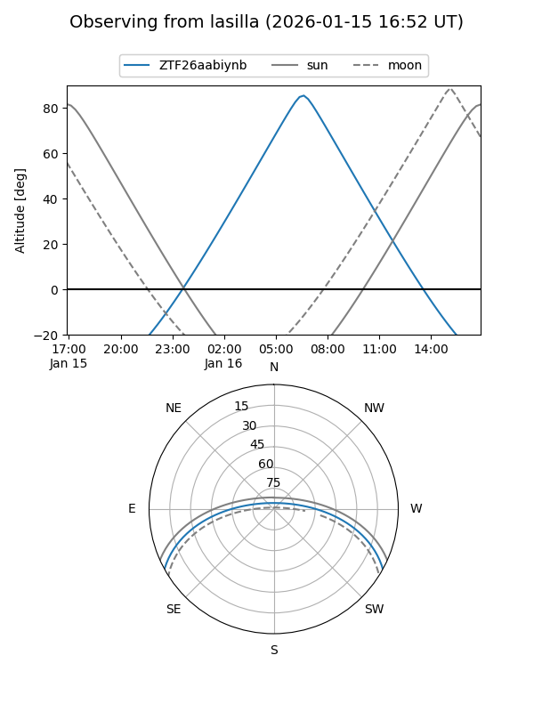
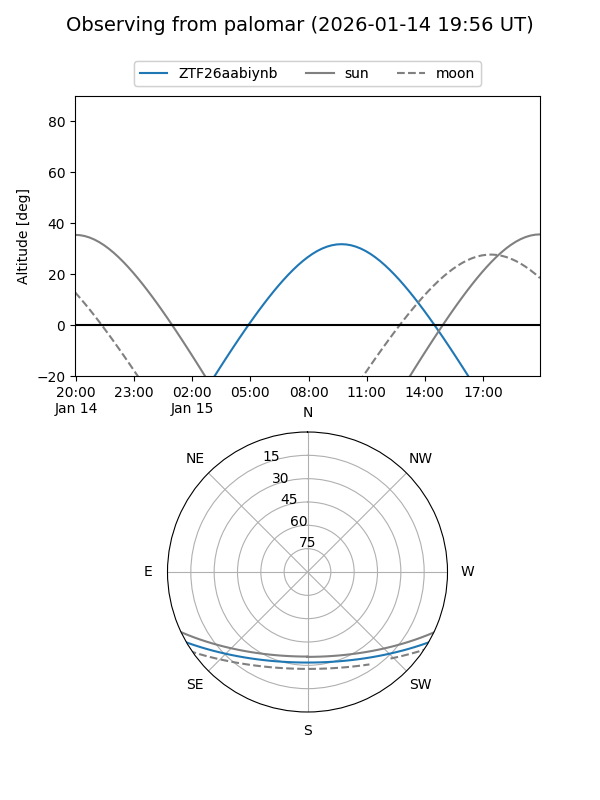

ZTF26aabiynb
Target ZTF26aabiynb at 2026-01-15 12:15
Aliases and brokers:
FINK: link
Lasair: link
ALeRCE: link
alt names
ZTF26aabiynb (ztf,fink_ztf)
Coordinates:
equatorial (ra, dec) = 143.1525,-24.74147
equatorial (HMS+DMS) = 09:32:36.61,-24:44:29.29
galactic (l, b) = (255.6794,+19.38292)
Flags:
Photometry:
last ztfg=19.13
1 ztfg detections
Lightcurve

Visibility


Additional plots